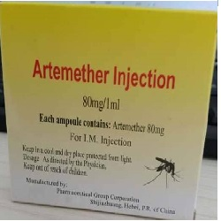

Artemether

ငှက်ဖျားပျောက်ဆေးမှာပါတဲ့ Artemether ဆိုတာဘာလဲ
Artemether ဆေးကို Lumefantrineဆေးနှင့် တွဲပြီးငှက်ဖျားရောဂါ ပျောက်ဆေးအနေနှင့် သုံးသည်။
ဆေးနှစ်မျိုး တွဲစပ်ထားသော Coartem ဆေးသည် အစွမ်းထက်သော ငှက်ဖျားပျောက်ဆေးများထဲမ တစ်မျိုးဖြစ်သည်။
ဆေးက ဘယ်လို အသုံးဝင်လဲ
ငှက်ဖျားပိုးသည် ခန္ဓာကိုယ်ထဲဝင်သောအခါ သွေးနီဥနှင့် အသည်းထဲတွင် ပုန်းအောင်းနေတတ်သည်။Artemether-lumefantrine ဆေးသည် သွေးနီဥထဲတွင် ပုန်းအောင်းနေသော ငှက်ဖျားပိုးကို သတ်ပေးသည်။
အသည်းထဲရှိ ငှက်ဖျားပိုးကို Primaquine ဆေးနှင့်သတ်ရသည်။
ငှက်ဖျား ရောဂါပျောက်ရန် အတွက် ဆေးအတွဲစပ် အမျိုးမျိုးကို ဆေးပတ်ပြည့်အောင် သေချာသောက်မှ ငှက်ဖျားကို အမြစ်ဖြတ်နိုင်မည် ဖြစ်သည်။
ဘေးထွက် ဆိုးကျိုး ဘာတွေရှိလဲ
ပျို့အန်ခြင်း၊ မူးဝေခြင်း၊ အစားအသောက်ပျက်ခြင်း၊ နှုံးခြင်း၊ ချမ်းတုန်၍ဖျားခြင်း၊ အရိုးအဆစ်နှင့်ကြွက်သားများ နာကျဉ်ခြင်း၊ ဗိုက်အောင့်ခြင်းများ ဖြစ်နိုင်သောကြောင့် လက္ခဏာဆိုးလျှင် နီးစပ်ရာ ဆေးခန်းသွားပြပါ။
ပြင်းထန်ဆိုးကျိုးများအနေနှင့် ရင်ဘတ်အောင့်ခြင်း၊ ချာချာလည်အောင်မူးခြင်း၊ သတိမေ့ခြင်း၊ မောခြင်း၊ ရင်တုန်ခြင်းများ ဖြစ်နိုင်ပါတယ်။
ဆေးမတည့်ဖြစ်ခြင်း ရှားပေမယ့် ဖြစ်လျှင် တတ်ကျွမ်းသော ဆရာဝန်နှင့် သေချာပြပါ။
ဆေးသောက်လျှင် ဘာတွေ သတိထားဖို့ လိုလဲ
အကယ်၍ Artemether-Lumefantrine ဆေးများနှင့် ဓာတ်မတည့်ဖြစ်ဖူးလျှင်၊ အခြားဓာတ်မတည့်သောအရာများရှိလျှင်၊ လပိုင်းအတွင်း ငှက်ဖျားပျောက်ဆေးများ၊ ငှက်ဖျား ကာကွယ်ဆေးများ(Halofantrine, Quinine,Quinidine) သုံးဖူးလျှင်၊ ကျောက်ကပ်နှင့် အသည်းရောဂါရှိလျှင် တတ်ကျွမ်းသော ဆရာဝန်ကို ကြိုတင် အသိပေးဖို့မမေ့ပါနှင့်။
ဆေးသည် နှလုံးကိုလည်း ထိနိုင်သောကြောင့် နှလုံးရောဂါရှိသော သူများ၊ နှလုံးဆေးသောက်နေရသောသူများ၊ ဆေးသောက်နေစဉ် မူးဝေခြင်း၊ သတိမေ့ခြင်း၊ နှလုံးခုန်မမှန်ခြင်း၊ ရင်တုန်ခြင်းများဖြစ်လျှင် သတိထားပါ။
Potassium ဓာတ်နည်းလျှင်လည်း နှလုံးကို ပိုဆိုးစေနိုင်သောကြောင့် ဆီးဆေးများ သောက်နေရလျှင်၊ ရေဓာတ်ခန်းခြောက်မှုများလျှင် ဆရာဝန်နှင့်တိုင်ပင်ပါ။
ဆေးသည်မူးဝေခြင်းကိုလည်း ဖြစ်စေနိုင်သောကြောင့် အရက်သောက်ခြင်းကို လျှော့ပါ။
ဆေးသောက်ထားပြီး ကားမောင်းခြင်းများရှောင်ပါ။
ခွဲစိတ်မှု ပြုလုပ်ဖို့လိုလျှင် မပြုလုပ်ခင် ဆရာဝန်အား ကြိုအသိပေးထားပါ။
ကိုယ်ဝန်ဆောင်နှင့်နို့တိုက်မိခင်များဆရာဝန်ညွှန်ကြားချက်မရပဲဆေးမသောက်သင့်ပါ။
ဆေးအာနိသင် ဘယ်လိုရှိလဲ
တစ်လအတွင်း ငှက်ဖျားဆေးသောက်ဖူးလျှင် ဆရာဝန်ကိုကြိုပြောပြထားရပါမယ်။ အချို့ငှက်ဖျားဆေးများသည် Artemether-lumefantrine ဆေးနှင့် အာနိသင်ရောပြီး ဆိုးကျိုးပိုဆိုးစေနိုင်သောကြောင့် တွဲမသုံးရပါ။
နှလုံးထိနိုင်သောဆေးများ -ဥပမာ ငှက်ဖျားဆေး(Qunine, Quinidine)၊ နှလုံးဆေး(Amiodarone, Procainamide, Disopyramide)၊ စိတ်ရောဂါဆေး(Pimozide)၊ ပိုးသတ်ဆေး(Erythromycin, Cirprofloxacin) ဆေးများနှင့် Artemether-lumefantrine ဆေးနှင့်တွဲသုံးနိုင်လျှင် နှလုံးပိုဆိုးစေနိုင်သောကြောင့် တွဲမသုံးသင့်ပါ။
အတက်ရောဂါပျောက်ဆေး(Phenytoin, Carbamazepine)၊ မှိုရောဂါပျောက်ဆေး(Ketoconazole, Itraconazole)၊ HIVဆေး (Ritonavir, Efavirenz)ဆေးများသည် ငှက်ဖျားဆေးကို ပြန်လည်စွန့်ထုတ်ရာတွင် ဒုက္ခပေးစေနိုင်သောကြောင့် တွဲမသုံးသင့်ပါ။
သွေးတိုးကျဆေး(Metoprolol)၊ စိတ်ရောဂါဆေး(Amitryptyline)ဆေးများ၏ အာနိသင်ကို ငှက်ဖျားပျောက်ဆေးမှ ပြောင်းလဲစေနိုင်ပါသည်။
Coartem ဆေးသည် ကိုယ်ဝန်တားဆေးများ၏ အစွမ်းအာနိသင်ကို လျော့ကျစေနိုင်သောကြောင့် ဆရာဝန်နှင့် သေချာဆွေးနွေးဖို့လိုအပ်ပါမယ်။
ဆေးသောက်လွန်လျှင် ဘာတွေဖြစ်မလဲ
ပြင်းပြင်းထန်ထန်မူးဝေခြင်း၊ သတိမေ့ခြင်း၊ နှလုံးခုန်နှေးခြင်း၊ မမှန်ခြင်း၊ ရင်တုန်ခြင်း၊ အသက်ရှုကြပ်ခြင်းများဖြစ်နိုင်ပါသည်။
ငှက်ဖျားပေါသော အရပ်ဒေသများကိုသွားသောအခါ ငှက်ဖျားပိုးသယ်ဆောင်ထားသောခြင် ကိုက်ခံရနိုင်ပြီး ငှက်ဖျားရောဂါပိုးသည် ခန္ဓာကိုယ်ထဲသို့ ဝင်ကာ ဒုက္ခပေးတတ်ပါတယ်။ ငှက်ဖျားမဖြစ်အောင် ဆေးစိမ်ခြင်ထောင်သုံးခြင်း၊ ကာကွယ်နိုင်သော နည်းအမျိုးမျိုးသုံး၍ တတ်နိုင်သမျှ ကာကွယ်နိုင်ပြီး ငှက်ဖျားရောဂါဖြစ်လျှင်လည်း ဆေးမြီးတိုများ မသောက်ဘဲ ငှက်ဖျားဆေးကို သေချာ စနစ်တကျသောက်ပေးခြင်းဖြင့် ငှက်ဖျားရောဂါကို အမြစ်ပြတ်အောင်ကုသနိုင်ပါတယ်။
Source- ဒေါက်တာ အိမ့်ချယ်ရီ